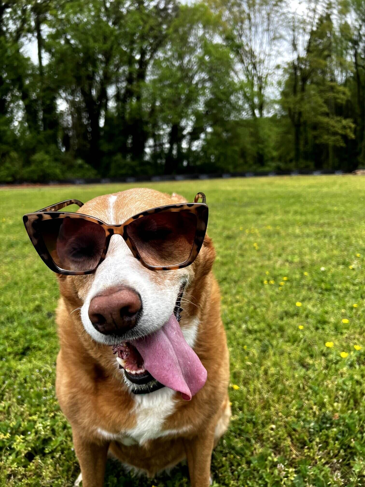
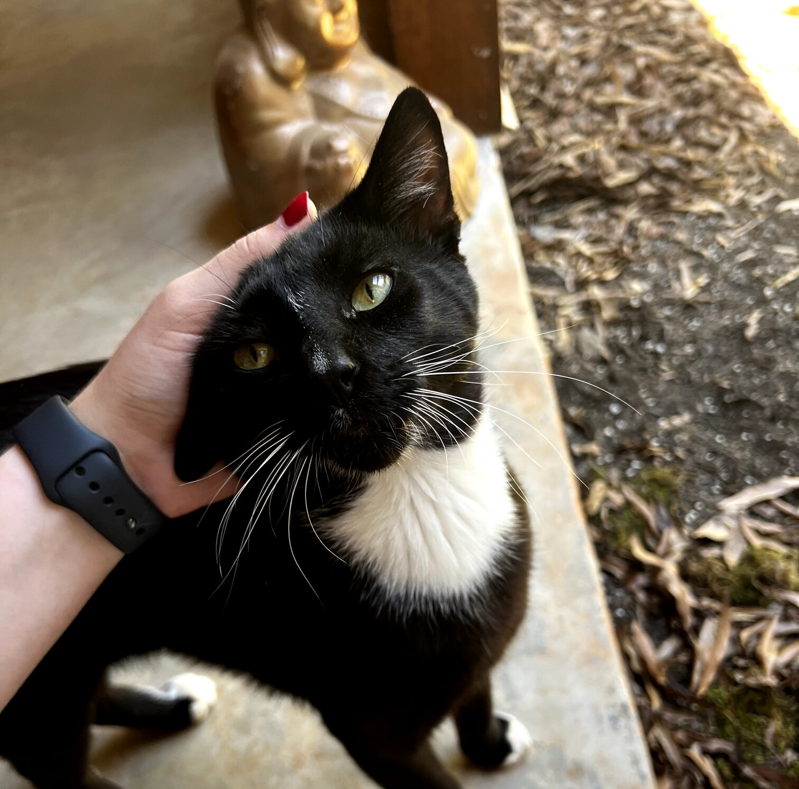
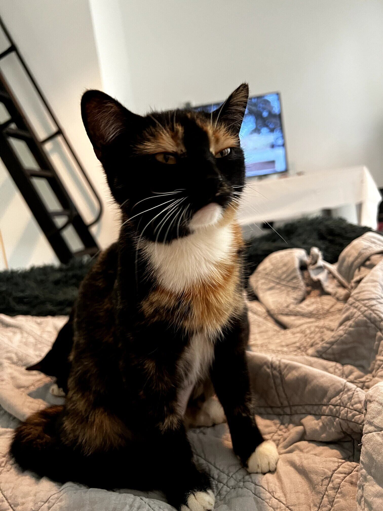

Khya
Khya and I have been together for almost two years now, and she inspires me every day to follow my passions. We met here in Wilmington, NC, however her home is in Charlotte, NC.
Khya is currenty in the Education Program at the University of North Carolina Wilmington. She has always had a passion for childhood developent, specializing in elementary education.
Khya and I are pictured above, having fun in the photo booth at a family wedding!
Ginger
Ginger has been in Khya's family for 11 years, and she has become one of my greatest friends in this time! When it comes to her breed, we are still unsure (possibly Carolina Dog mix). Ginger has an outgoing personality, and loves to meet new friends when she goes on walks.
When Ginger isn't sunbathing outside, you can find her hiking the trails with us, and swimming in the intercoastal here in Wilmington!
Huckleberry and Maple
Huckleberry Finn and Maple are the newest additions to the family! We found them on the streets of Charlotte, and took them in. Both of them have an adventurous personality, and love to wander the neighborhood.
 